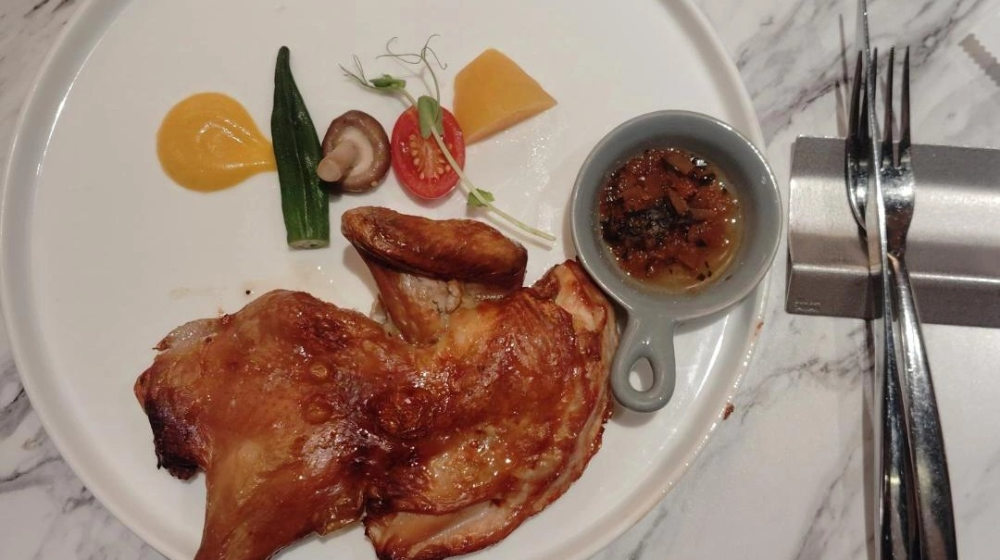
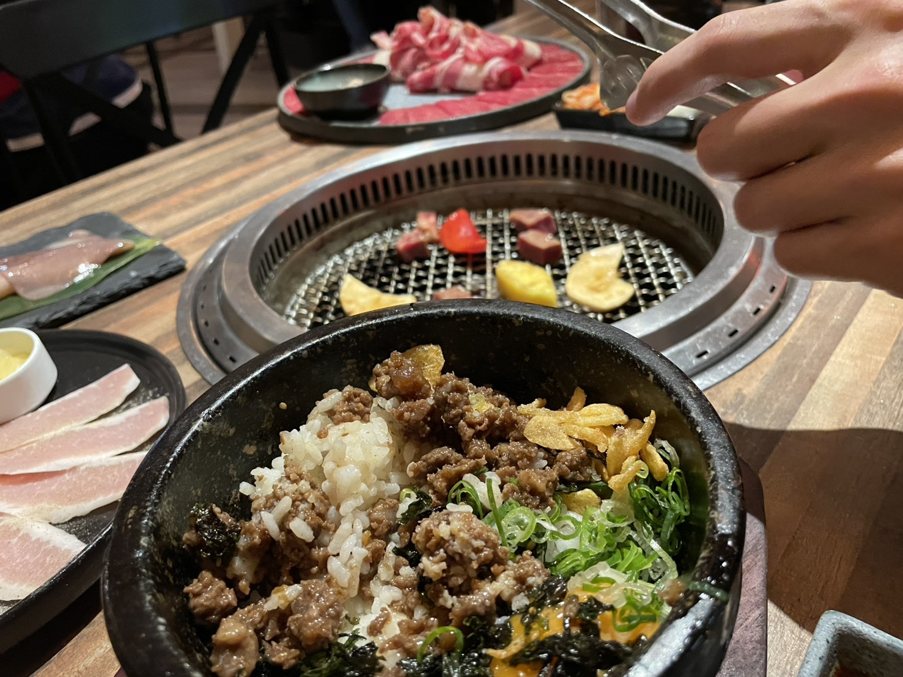
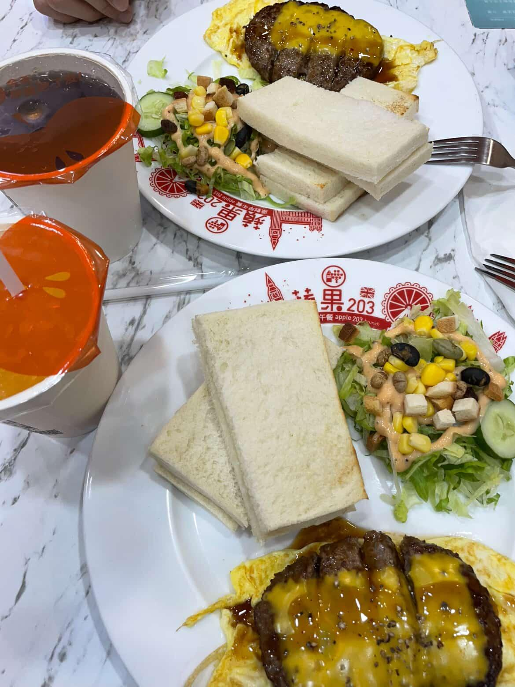
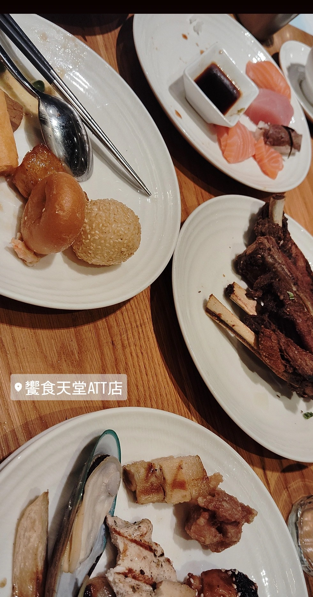

那些一起吃過的東西， 慢慢變成了我們的小日常。
那天你問我有沒有喜歡吃的餐廳，我想起小時候最喜歡吃西堤，那時都是重要節日才會去吃的。
後來你說要在去台中上課前帶我去吃，我還以為是什麼分別前的最後一餐，嚇了一跳呢!結果你只是想讓我開心而已。
真正坐在餐廳裡的時候，我突然鼻子一酸。原來有人會因為我喜歡，就真的帶我去。那一刻真的很溫柔。

我們100天的時候，你帶我去吃原燒。 其實我一直沒有特別喜歡吃烤肉，因為以前曾經吃得太油膩，結果胃痛了好幾天。
所以一開始聽到要吃燒肉的時候，我其實有點猶豫。 但沒想到，那卻變成我吃過最好吃的一次烤肉。
我不知道是因為原燒真的很好吃， 還是因為坐在我旁邊的人是你。
那天你像個小廚師一樣，一直幫我烤肉、夾肉， 而我則心安理得地當個小吃貨，只負責吃吃吃。哈哈哈

每次回宜蘭找你的時候，我們其實很少一起吃早餐。 不是你要上班，不然就是我早上根本起不來。哈哈
後來有一次要出去玩，我們剛好吃了蘋果早餐店。 結果不知道從什麼時候開始，只要一起吃早餐，幾乎都會跑去那裡。
常去到我，都記得你餐點的小習慣 沙拉不要醬，紅茶要無糖。
原來喜歡一個人之後， 真的會在不知不覺中記住許多小細節。 而那些平凡到不能再平凡的早餐時光， 也慢慢變成了我最喜歡的日常。

過了新的一年，當然要吃點好的呀！
那時候寒假剛開始，我終於有時間打工，也終於有了一點自己的小存款。 之前總是你帶我去吃好多好吃的東西，這一次換我請客啦。
你就盡情吃吧，想吃什麼就夾什麼！
雖然更高級的餐廳我還請不起， 但至少這頓飯，是我想送給你的心意。
不過放心，等我以後賺更多錢， 一定要帶你去更多好吃的！
